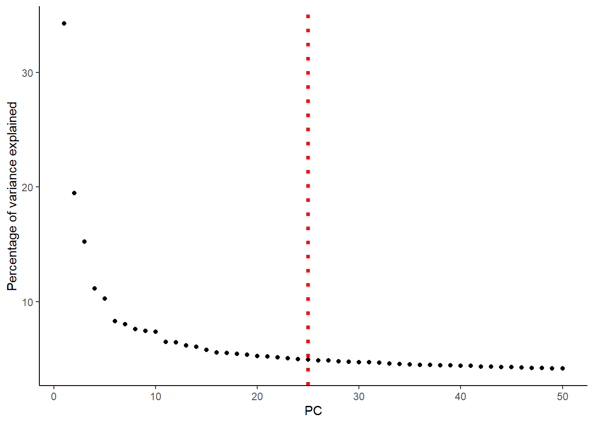
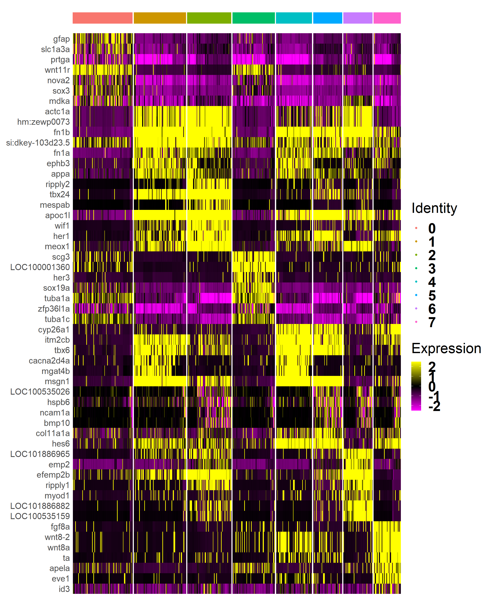
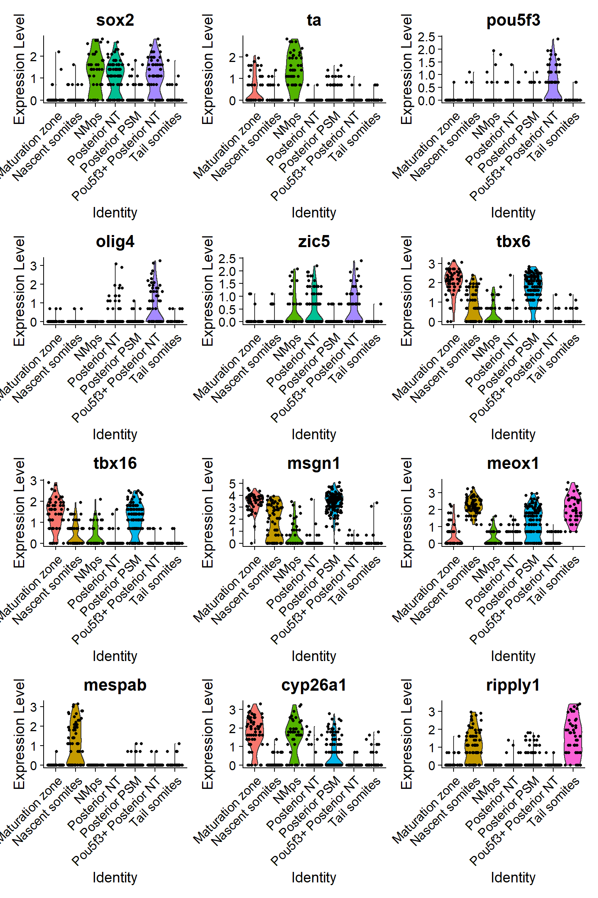
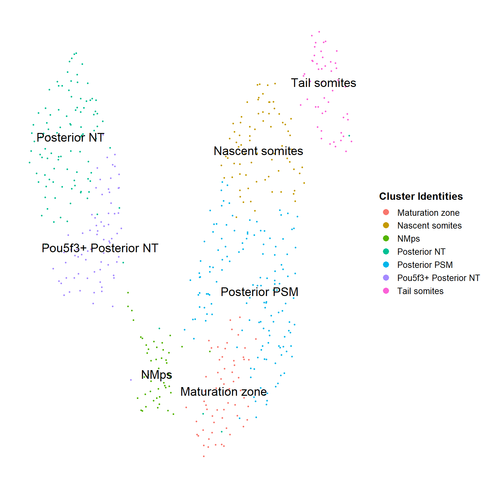
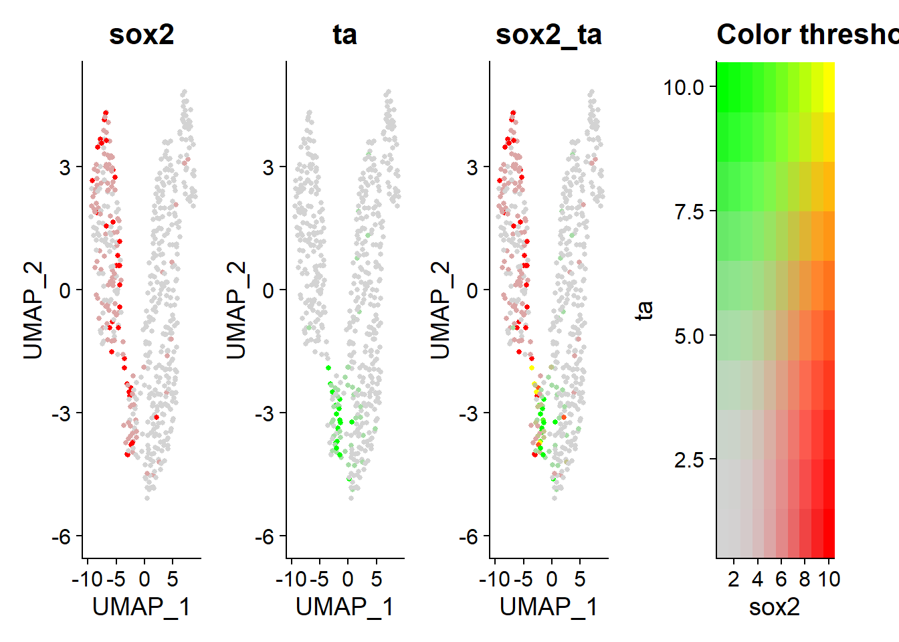
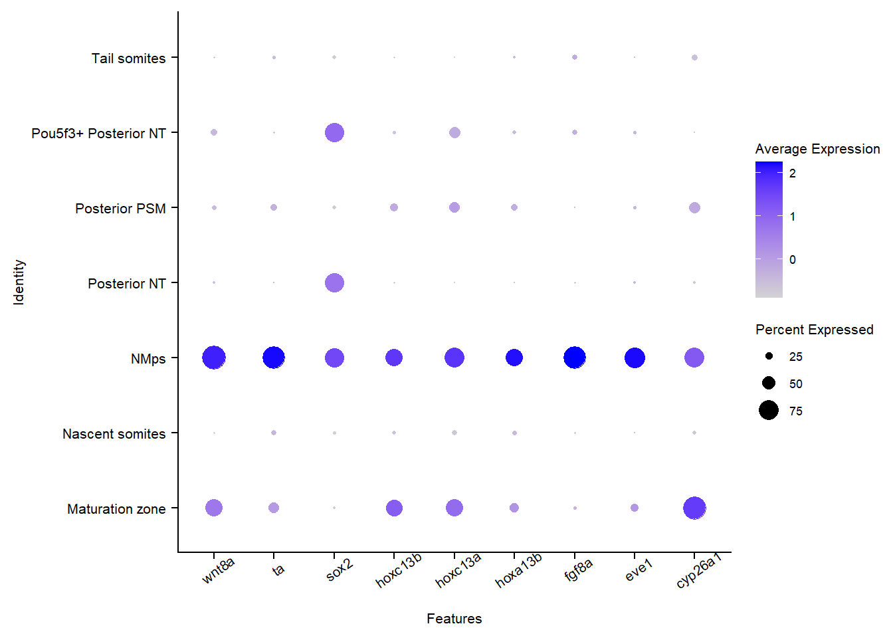
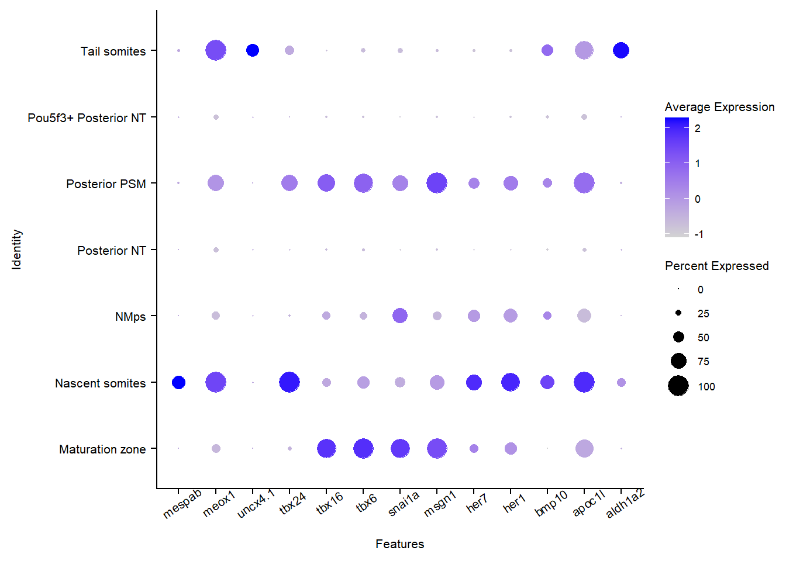
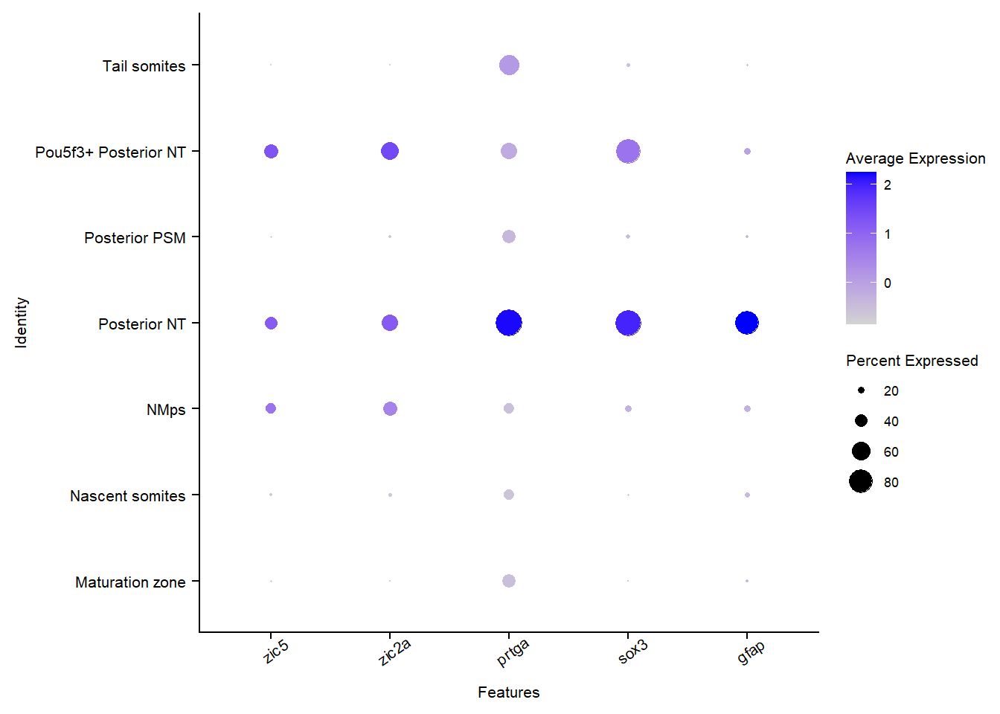

Chapter 7 Subclustering
7.1 Importing libraries
7.2 Importing Data
7.4 Dimensional reduction with UMAP and clustering
## PC_ 1
## Positive: apoc1l, msgn1, fn1b, tbx24, tbx6, myf5, her1, apoeb, si:dkey-103d23.5, itm2cb
## tbx16, hoxd12a, her7, hm:zewp0073, actc1a, cdx4, LOC103910167, cxcl12b, tuba8l2, wu:fb77a09
## tcf15, efemp2b, hes6, meox1, phkg2, zgc:56585, foxc1a, cyp26a1, hoxb10a, kif26ab
## Negative: tmsb4x, id1, actb2, fosab, fabp3, krt8, rrm2, prtga, her15.1, junbb
## her2, wu:fb18c02, nova2, marcksl1b, pcna, zfp36l1a, LOC100534909, epcam, wu:fb25b09, elavl3
## pfn1, krt18, cfl1l, krt4, mdka, jun, sox3, tuba1a, atf3, her6
## PC_ 2
## Positive: cdx4, hoxd12a, wnt8-2, wnt8a, hoxc13a, cyp26a1, hoxc13b, LOC103910167, kif26ab, sp5l
## LOC100001360, hoxb9a, scg3, eve1, her12, ldlrad2, cx43.4, ta, hes6, itm2cb
## fgf8a, tbx16, ptmab, hoxd9a, hoxa9b, angptl2b, hoxa13b, phkg2, hoxa10b, tbx6
## Negative: tbx24, hm:zewp0073, actc1a, efemp2b, hsp90aa1.1, apoc1l, meox1, tcf15, fn1b, myf5
## apoeb, LOC101886965, ripply1, wif1, ripply2, cpn1, LOC101886882, ntd5, kazald2, mespab
## LOC100535159, si:dkey-103d23.5, tuba8l2, net1, unc45b, rbm24a, aldh1a2, ppap2a, LOC100536992, dmrt2a
## PC_ 3
## Positive: msgn1, tbx6, itm2cb, tbx16, cyp26a1, hoxc13b, phkg2, hes6, snai1a, wu:fb77a09
## rbm38, hoxc13a, fn1a, ved, mgat4b, actb2, her1, aplnrb, tmsb4x, tob1a
## palld, her7, cacna2d4a, wnt8-2, wnt8a, krt8, si:dkey-261h17.1, foxc1a, hoxa13a, ephb3
## Negative: ldlrad2, LOC100001360, scg3, LOC103910167, efemp2b, hoxb9a, wnt11r, hsp90aa1.1, her12, tcf15
## hoxc3a, si:dkey-103d23.5, meox1, LOC101886965, ppp2r2ca, zic2a, LOC103911885, LOC101882117, olig4, alcamb
## cdx4, LOC101886882, ripply1, col5a2a, bicc2, si:ch211-170d8.2, her3, hspb1, cdh6, hm:zewp0073
## PC_ 4
## Positive: wnt8-2, wnt8a, fgf8a, hoxc13b, ta, LOC101886965, efemp2b, cyp26a1, LOC101886882, eve1
## hoxc13a, LOC100535159, cpn1, aldh1a2, tagln3b, thbs4b, kif26ab, hoxa13b, sp5l, kazald2
## ripply1, hsp90aa1.1, angptl7, myod1, ppap2a, LOC100536992, rdh10a, zgc:158328, apela, rprmb
## Negative: msgn1, tbx24, ism1, tbx6, her1, ldlrad2, foxc1a, her7, wnt11r, tbx16
## zgc:56585, ripply2, hoxb1b, apoeb, palld, lbx2, wif1, phc2a, si:dkey-103d23.5, LOC100334443
## foxc1b, LOC561719, igsf9, scg3, mgat4b, dact2, zic3, itm2cb, cacna2d4a, her2
## PC_ 5
## Positive: her7, her1, ripply2, mespab, her12, apoeb, tbx24, hoxc13a, wif1, dlc
## her11, LOC101883520, mespaa, LOC557301, hoxc13b, fgf8a, ta, hoxb7a, eve1, dld
## hoxa13b, sp5l, hoxa13a, ntd5, fkbp7, hoxc3a, tagln3b, wnt8a, wnt8-2, net1
## Negative: si:dkey-103d23.5, ephb3, mgat4b, fn1b, cacna2d4a, LOC103910167, LOC100006216, itm2cb, tbx6, angptl7
## LOC103911885, si:ch211-168h21.3, ppp2r2ca, LOC100537766, thbs4b, LOC103908989, tbx16, foxc1a, zgc:123035, phkg2
## LOC101886965, cpn1, cdx1a, msgn1, crabp2b, rdh10a, zgc:162707, her15.1, uncx4.1, tgfbi# Elbow plot to determine number of PCs for dimension reduction
ep <- ElbowPlot(TBcells, ndims = 50, reduction = "pca") +
geom_vline(xintercept = 25, color = "red", size=1.5, linetype="dotted") +
ylab(label = "Percentage of variance explained") +
theme_bw() + theme(axis.line = element_line(colour = "black"),
panel.grid.major = element_blank(),
panel.grid.minor = element_blank(),
panel.border = element_blank(),
panel.background = element_blank(),
text=element_text(family="Arial"))
# UMAP embedding and clustering
ep
## 17:42:38 UMAP embedding parameters a = 0.3208 b = 1.563## 17:42:38 Read 551 rows and found 25 numeric columns## 17:42:38 Using Annoy for neighbor search, n_neighbors = 30## 17:42:38 Building Annoy index with metric = cosine, n_trees = 50## 0% 10 20 30 40 50 60 70 80 90 100%## [----|----|----|----|----|----|----|----|----|----|## **************************************************|
## 17:42:38 Writing NN index file to temp file C:\Users\User\AppData\Local\Temp\RtmpUv6AgP\file439ce965a11
## 17:42:38 Searching Annoy index using 1 thread, search_k = 3000
## 17:42:38 Annoy recall = 100%
## 17:42:39 Commencing smooth kNN distance calibration using 1 thread
## 17:42:40 Initializing from normalized Laplacian + noise
## 17:42:40 Commencing optimization for 500 epochs, with 20478 positive edges
## 17:42:41 Optimization finished7.5 Identifying marker genes for each cluster
# Setting identity for cells to seurat clustering results
TBcells<- SetIdent(TBcells, value = TBcells@meta.data$seurat_clusters)
all_clusters <- FindAllMarkers(TBcells, test.use = "wilcox", only.pos = TRUE) %>%
group_by(cluster)%>%
filter(p_val_adj < 0.05)%>%
arrange(cluster, desc(abs(avg_logFC)),p_val_adj)## Calculating cluster 0## Calculating cluster 1## Calculating cluster 2## Calculating cluster 3## Calculating cluster 4## Calculating cluster 5## Calculating cluster 6## Calculating cluster 7#write.csv(all_clusters,file = "Files/2g)MarkerGenes_9Clusters.csv")
# Viewing number of cells in each cluster
table(TBcells@meta.data$seurat_clusters)##
## 0 1 2 3 4 5 6 7
## 103 90 76 73 62 50 50 47# Plot a heatmap to visualize the top 7 marker genes in each cluster.
top7_wilcox <- all_clusters %>% group_by(cluster) %>% top_n(7, avg_logFC)
DoHeatmap(object = TBcells, features = as.character(top7_wilcox$gene), label = FALSE) +
theme(legend.title = element_text(size = 25),
axis.line=element_blank(),
axis.text.x=element_blank(),
axis.text.y = element_text(size = 15),
axis.ticks=element_blank(),
axis.title.x=element_blank(),
axis.title.y=element_blank(),
legend.text=element_text(face="bold", size = 25),
text=element_text(family="Arial")) 
## # A tibble: 56 x 7
## # Groups: cluster [8]
## p_val avg_logFC pct.1 pct.2 p_val_adj cluster gene
## <dbl> <dbl> <dbl> <dbl> <dbl> <fct> <chr>
## 1 5.41e-54 1.55 0.796 0.118 1.62e-49 0 gfap
## 2 8.71e-29 1.44 0.689 0.201 2.60e-24 0 slc1a3a
## 3 1.69e-31 1.41 0.893 0.44 5.06e-27 0 prtga
## 4 5.01e-44 1.30 0.816 0.181 1.50e-39 0 wnt11r
## 5 3.60e-42 1.28 0.903 0.268 1.08e-37 0 nova2
## 6 3.88e-42 1.27 0.854 0.219 1.16e-37 0 sox3
## 7 7.61e-22 1.13 0.932 0.766 2.28e-17 0 mdka
## 8 6.98e-16 1.13 0.922 0.482 2.09e-11 1 actc1a
## 9 8.80e-16 1.12 0.922 0.482 2.63e-11 1 hm:zewp0073
## 10 7.98e-26 0.954 1 0.62 2.39e-21 1 fn1b
## # ... with 46 more rows7.6 Merging clusters that do not appear distinct
7.7 Plotting UMAP and assigning cluster labels
labelList <- data.frame(clusterID = c(0,1,2,3,4,6,7),
clusterNames = c("Posterior NT",
"Posterior PSM",
"Nascent somites",
"Pou5f3+ Posterior NT",
"Maturation zone",
"Tail somites",
"NMps"))
TBcells$subclusters_names <- labelList$clusterNames[match(TBcells$seurat_clusters, labelList$clusterID)]
TBcells$subclusters_names <- factor(TBcells$subclusters_names)
TBcells<- SetIdent(TBcells, value = TBcells@meta.data$subclusters_names)7.8 Checking the marker genes for each cluster
marker_genes <- c("sox2", "ta", "pou5f3", "olig4", "zic5","tbx6", "tbx16","msgn1","meox1", "mespab", "cyp26a1", "ripply1")
VlnPlot(object = TBcells, features = marker_genes, ncol = 3)
# Plotting UMAP dimplot with cluster labels
cols <- c(scales::hue_pal()(7), "#FFFFFF")
DimPlot(TBcells, label = TRUE, label.size = 5, pt.size=0.6)+
scale_color_manual(values = cols, name = "Cluster Identities")+
mytheme
7.9 Sox2 tbxta coexpression
# Plotting co-expression of sox2 and ta in TBcells
FeaturePlot(TBcells, features = c("sox2", "ta"), blend = TRUE, pt.size = 1, blend.threshold = 0.5)
7.10 Viewing genes of interest with a dotplot
# Looking at only cells in the NM decision
TBcells_nmdecision <- subset(TBcells, subset = subclusters_names == "Neuromesodermal Progenitors" |
subclusters_names == "Maturation zone" |
subclusters_names == "Pou5f3+ Posterior NT" |
subclusters_names == "Posterior NT")
# Specifying genes to visualize
nm_genes <- c("cyp26a1","eve1","fgf8a","hoxa13b","hoxc13a","hoxc13b","sox2","ta","wnt8a")
meso_genes <- c("aldh1a2", "apoc1l","bmp10", "her1", "her7", "msgn1","snai1a","tbx6","tbx16","tbx24","uncx4.1", "meox1", "mespab")
neural_genes <- c("gfap", "sox3", "prtga", "zic2a", "zic5")DotPlot(TBcells, features = nm_genes) +
theme(text = element_text(size = 8),
axis.text.y = element_text(size = 8),
axis.text.x = element_text(size = 8, angle = 35))
DotPlot(TBcells, features = meso_genes) +
theme(text = element_text(size = 8),
axis.text.y = element_text(size = 8),
axis.text.x = element_text(size = 8, angle = 35))
DotPlot(TBcells, features = neural_genes) +
theme(text = element_text(size = 8),
axis.text.y = element_text(size = 8),
axis.text.x = element_text(size = 8, angle = 35))
Q1) How would you save the images in the working directory?
7.11 Exporting the violin plots for genes of interest.
We loop over each violin plot using the lapply function, which merits additional comment.The apply family of functions is very useful to perform an action repeatedly on a collection of objects such as a dataframe, vector, list etc. Normally iteration is done with a for loop, which is rather time-consuming. The apply function performs the iteration without the explicit use of a for loop. lapply returns a list.
Q2) What is the difference between lapply and sapply?
# Looking at expression of nmp markers over all clusters in individual violinPlots
nmp_markers <- c(
"fgf8a",
"wnt8-2",
"wnt8a",
"ta",
"apela",
"eve1",
"ndnf",
"cyp26a1",
"hoxc13b",
"id3",
"hoxc13a",
"thbs2",
"sp5l",
"tagln3b",
"mcamb",
"her12",
"hoxa13b",
"hoxd12a",
"kif26ab",
"sox2",
"prickle1b",
"si:dkey-261h17.1",
"cdh6",
"cx43.4",
"zgc:158328",
"fndc3ba",
"mnx1",
"hes6",
"znf703",
"ube2e2",
"angptl2b",
"depdc7",
"efhd2",
"kdm6a",
"nradd",
"enc1",
"snai1a",
"arf1",
"flrt3",
"phgdh",
"traf4a",
"wls",
"sepn1",
"esrrga",
"ptmab",
"ptbp1b",
"ptmaa",
"mgat1b",
"ubl3a",
"sall4",
"tuba8l4",
"hoxd13a",
"LOC100537138",
"nog2",
"h3f3a",
"myclb",
"sult6b1",
"galnt2",
"fgf4",
"foxa",
"bbc3",
"hoxd11a",
"rcn3",
"plk4",
"foxd3",
"pip5k1ca",
"sec22bb",
"slc12a7b",
"marveld1",
"pcp4a"
)
#write.table(nmp_markers, file = "nmp_markergenes.txt")
plots <- VlnPlot(object = TBcells, features =nmp_markers, combine = FALSE)
plots <- lapply(X = plots, FUN = function(x) x + theme(plot.title = element_text(size = 30),
text = element_text(size = 15),
axis.text.y = element_text(size = 12),
axis.text.x = element_text(size = 12, angle = 35)))
for (i in 1:length(plots)) {
ggsave(plot = plots[[i]], path = "violin_plots", filename = paste0("violin_",nmp_markers[i],".png"), width = 14, height = 10, units = "cm")
}7.12 Saving RDS object
7.13 Session Info
View Session Info
devtools::session_info()
## - Session info ---------------------------------------------------------------
## setting value
## version R version 4.0.0 (2020-04-24)
## os Windows 10 x64
## system x86_64, mingw32
## ui RTerm
## language (EN)
## collate English_United Kingdom.1252
## ctype English_United Kingdom.1252
## tz Asia/Kuala_Lumpur
## date 2020-06-03
##
## - Packages -------------------------------------------------------------------
## package * version date lib source
## AnnotationDbi * 1.50.0 2020-04-27 [1] Bioconductor
## ape 5.3 2019-03-17 [1] CRAN (R 4.0.0)
## assertthat 0.2.1 2019-03-21 [1] CRAN (R 4.0.0)
## backports 1.1.6 2020-04-05 [1] CRAN (R 4.0.0)
## beeswarm 0.2.3 2016-04-25 [1] CRAN (R 4.0.0)
## bibtex 0.4.2.2 2020-01-02 [1] CRAN (R 4.0.0)
## Biobase * 2.48.0 2020-04-27 [1] Bioconductor
## BiocGenerics * 0.34.0 2020-04-27 [1] Bioconductor
## BiocNeighbors 1.6.0 2020-04-27 [1] Bioconductor
## BiocParallel 1.22.0 2020-04-27 [1] Bioconductor
## BiocSingular 1.4.0 2020-04-27 [1] Bioconductor
## bit 1.1-15.2 2020-02-10 [1] CRAN (R 4.0.0)
## bit64 0.9-7 2017-05-08 [1] CRAN (R 4.0.0)
## bitops 1.0-6 2013-08-17 [1] CRAN (R 4.0.0)
## blob 1.2.1 2020-01-20 [1] CRAN (R 4.0.0)
## bookdown 0.19 2020-05-15 [1] CRAN (R 4.0.0)
## broom 0.5.6 2020-04-20 [1] CRAN (R 4.0.0)
## callr 3.4.3 2020-03-28 [1] CRAN (R 4.0.0)
## cellranger 1.1.0 2016-07-27 [1] CRAN (R 4.0.0)
## cli 2.0.2 2020-02-28 [1] CRAN (R 4.0.0)
## cluster * 2.1.0 2019-06-19 [2] CRAN (R 4.0.0)
## codetools 0.2-16 2018-12-24 [2] CRAN (R 4.0.0)
## colorspace 1.4-1 2019-03-18 [1] CRAN (R 4.0.0)
## cowplot 1.0.0 2019-07-11 [1] CRAN (R 4.0.0)
## crayon 1.3.4 2017-09-16 [1] CRAN (R 4.0.0)
## data.table 1.12.8 2019-12-09 [1] CRAN (R 4.0.0)
## DBI 1.1.0 2019-12-15 [1] CRAN (R 4.0.0)
## dbplyr 1.4.3 2020-04-19 [1] CRAN (R 4.0.0)
## DelayedArray * 0.14.0 2020-04-27 [1] Bioconductor
## DelayedMatrixStats 1.10.0 2020-04-27 [1] Bioconductor
## desc 1.2.0 2018-05-01 [1] CRAN (R 4.0.0)
## devtools 2.3.0 2020-04-10 [1] CRAN (R 4.0.0)
## digest 0.6.25 2020-02-23 [1] CRAN (R 4.0.0)
## doParallel 1.0.15 2019-08-02 [1] CRAN (R 4.0.0)
## dplyr * 0.8.5 2020-03-07 [1] CRAN (R 4.0.0)
## dqrng 0.2.1 2019-05-17 [1] CRAN (R 4.0.0)
## edgeR 3.30.0 2020-04-27 [1] Bioconductor
## ellipsis 0.3.0 2019-09-20 [1] CRAN (R 4.0.0)
## evaluate 0.14 2019-05-28 [1] CRAN (R 4.0.0)
## extrafont * 0.17 2014-12-08 [1] CRAN (R 4.0.0)
## extrafontdb 1.0 2012-06-11 [1] CRAN (R 4.0.0)
## fansi 0.4.1 2020-01-08 [1] CRAN (R 4.0.0)
## farver 2.0.3 2020-01-16 [1] CRAN (R 4.0.0)
## fitdistrplus 1.0-14 2019-01-23 [1] CRAN (R 4.0.0)
## forcats * 0.5.0 2020-03-01 [1] CRAN (R 4.0.0)
## foreach 1.5.0 2020-03-30 [1] CRAN (R 4.0.0)
## fs 1.4.1 2020-04-04 [1] CRAN (R 4.0.0)
## future 1.17.0 2020-04-18 [1] CRAN (R 4.0.0)
## future.apply 1.5.0 2020-04-17 [1] CRAN (R 4.0.0)
## generics 0.0.2 2018-11-29 [1] CRAN (R 4.0.0)
## GenomeInfoDb * 1.24.0 2020-04-27 [1] Bioconductor
## GenomeInfoDbData 1.2.3 2020-05-11 [1] Bioconductor
## GenomicRanges * 1.40.0 2020-04-27 [1] Bioconductor
## ggbeeswarm 0.6.0 2017-08-07 [1] CRAN (R 4.0.0)
## ggplot2 * 3.3.0 2020-03-05 [1] CRAN (R 4.0.0)
## ggrepel 0.8.2 2020-03-08 [1] CRAN (R 4.0.0)
## ggridges 0.5.2 2020-01-12 [1] CRAN (R 4.0.0)
## globals 0.12.5 2019-12-07 [1] CRAN (R 4.0.0)
## glue 1.4.0 2020-04-03 [1] CRAN (R 4.0.0)
## gridBase 0.4-7 2014-02-24 [1] CRAN (R 4.0.0)
## gridExtra * 2.3 2017-09-09 [1] CRAN (R 4.0.0)
## gtable 0.3.0 2019-03-25 [1] CRAN (R 4.0.0)
## gtools 3.8.2 2020-03-31 [1] CRAN (R 4.0.0)
## haven 2.2.0 2019-11-08 [1] CRAN (R 4.0.0)
## highr 0.8 2019-03-20 [1] CRAN (R 4.0.0)
## hms 0.5.3 2020-01-08 [1] CRAN (R 4.0.0)
## htmltools 0.4.0 2019-10-04 [1] CRAN (R 4.0.0)
## htmlwidgets 1.5.1 2019-10-08 [1] CRAN (R 4.0.0)
## httr 1.4.1 2019-08-05 [1] CRAN (R 4.0.0)
## ica 1.0-2 2018-05-24 [1] CRAN (R 4.0.0)
## igraph 1.2.5 2020-03-19 [1] CRAN (R 4.0.0)
## IRanges * 2.22.1 2020-04-28 [1] Bioconductor
## irlba 2.3.3 2019-02-05 [1] CRAN (R 4.0.0)
## iterators 1.0.12 2019-07-26 [1] CRAN (R 4.0.0)
## jsonlite 1.6.1 2020-02-02 [1] CRAN (R 4.0.0)
## KernSmooth 2.23-16 2019-10-15 [2] CRAN (R 4.0.0)
## knitr 1.28 2020-02-06 [1] CRAN (R 4.0.0)
## labeling 0.3 2014-08-23 [1] CRAN (R 4.0.0)
## lattice 0.20-41 2020-04-02 [2] CRAN (R 4.0.0)
## lazyeval 0.2.2 2019-03-15 [1] CRAN (R 4.0.0)
## leiden 0.3.3 2020-02-04 [1] CRAN (R 4.0.0)
## lifecycle 0.2.0 2020-03-06 [1] CRAN (R 4.0.0)
## limma 3.44.1 2020-04-28 [1] Bioconductor
## listenv 0.8.0 2019-12-05 [1] CRAN (R 4.0.0)
## lmtest 0.9-37 2019-04-30 [1] CRAN (R 4.0.0)
## locfit 1.5-9.4 2020-03-25 [1] CRAN (R 4.0.0)
## lsei 1.2-0.1 2020-05-06 [1] CRAN (R 4.0.0)
## lubridate 1.7.8 2020-04-06 [1] CRAN (R 4.0.0)
## magrittr 1.5 2014-11-22 [1] CRAN (R 4.0.0)
## MASS 7.3-51.5 2019-12-20 [2] CRAN (R 4.0.0)
## Matrix 1.2-18 2019-11-27 [2] CRAN (R 4.0.0)
## matrixStats * 0.56.0 2020-03-13 [1] CRAN (R 4.0.0)
## mclust * 5.4.6 2020-04-11 [1] CRAN (R 4.0.0)
## memoise 1.1.0 2017-04-21 [1] CRAN (R 4.0.0)
## modelr 0.1.7 2020-04-30 [1] CRAN (R 4.0.0)
## munsell 0.5.0 2018-06-12 [1] CRAN (R 4.0.0)
## nlme 3.1-147 2020-04-13 [2] CRAN (R 4.0.0)
## NMF * 0.22.0 2020-02-12 [1] CRAN (R 4.0.0)
## npsurv 0.4-0.1 2020-05-06 [1] CRAN (R 4.0.0)
## org.Dr.eg.db * 3.11.1 2020-05-11 [1] Bioconductor
## patchwork 1.0.0 2019-12-01 [1] CRAN (R 4.0.0)
## pbapply 1.4-2 2019-08-31 [1] CRAN (R 4.0.0)
## pheatmap * 1.0.12 2019-01-04 [1] CRAN (R 4.0.0)
## pillar 1.4.4 2020-05-05 [1] CRAN (R 4.0.0)
## pkgbuild 1.0.8 2020-05-07 [1] CRAN (R 4.0.0)
## pkgconfig 2.0.3 2019-09-22 [1] CRAN (R 4.0.0)
## pkgload 1.0.2 2018-10-29 [1] CRAN (R 4.0.0)
## pkgmaker * 0.31.1 2020-03-19 [1] CRAN (R 4.0.0)
## plotly 4.9.2.1 2020-04-04 [1] CRAN (R 4.0.0)
## plyr 1.8.6 2020-03-03 [1] CRAN (R 4.0.0)
## png 0.1-7 2013-12-03 [1] CRAN (R 4.0.0)
## prettyunits 1.1.1 2020-01-24 [1] CRAN (R 4.0.0)
## processx 3.4.2 2020-02-09 [1] CRAN (R 4.0.0)
## ps 1.3.3 2020-05-08 [1] CRAN (R 4.0.0)
## purrr * 0.3.4 2020-04-17 [1] CRAN (R 4.0.0)
## R.methodsS3 * 1.8.0 2020-02-14 [1] CRAN (R 4.0.0)
## R.oo * 1.23.0 2019-11-03 [1] CRAN (R 4.0.0)
## R.utils * 2.9.2 2019-12-08 [1] CRAN (R 4.0.0)
## R6 2.4.1 2019-11-12 [1] CRAN (R 4.0.0)
## RANN 2.6.1 2019-01-08 [1] CRAN (R 4.0.0)
## rappdirs 0.3.1 2016-03-28 [1] CRAN (R 4.0.0)
## RColorBrewer * 1.1-2 2014-12-07 [1] CRAN (R 4.0.0)
## Rcpp 1.0.4.6 2020-04-09 [1] CRAN (R 4.0.0)
## RcppAnnoy 0.0.16 2020-03-08 [1] CRAN (R 4.0.0)
## RCurl 1.98-1.2 2020-04-18 [1] CRAN (R 4.0.0)
## readr * 1.3.1 2018-12-21 [1] CRAN (R 4.0.0)
## readxl 1.3.1 2019-03-13 [1] CRAN (R 4.0.0)
## registry * 0.5-1 2019-03-05 [1] CRAN (R 4.0.0)
## remotes 2.1.1 2020-02-15 [1] CRAN (R 4.0.0)
## reprex 0.3.0 2019-05-16 [1] CRAN (R 4.0.0)
## reshape2 1.4.4 2020-04-09 [1] CRAN (R 4.0.0)
## reticulate 1.15 2020-04-02 [1] CRAN (R 4.0.0)
## rlang 0.4.6 2020-05-02 [1] CRAN (R 4.0.0)
## rmarkdown 2.1 2020-01-20 [1] CRAN (R 4.0.0)
## rngtools * 1.5 2020-01-23 [1] CRAN (R 4.0.0)
## ROCR 1.0-11 2020-05-02 [1] CRAN (R 4.0.0)
## rprojroot 1.3-2 2018-01-03 [1] CRAN (R 4.0.0)
## RSpectra 0.16-0 2019-12-01 [1] CRAN (R 4.0.0)
## RSQLite 2.2.0 2020-01-07 [1] CRAN (R 4.0.0)
## rstudioapi 0.11 2020-02-07 [1] CRAN (R 4.0.0)
## rsvd 1.0.3 2020-02-17 [1] CRAN (R 4.0.0)
## Rtsne 0.15 2018-11-10 [1] CRAN (R 4.0.0)
## Rttf2pt1 1.3.8 2020-01-10 [1] CRAN (R 4.0.0)
## rvest 0.3.5 2019-11-08 [1] CRAN (R 4.0.0)
## S4Vectors * 0.26.0 2020-04-27 [1] Bioconductor
## scales * 1.1.1 2020-05-11 [1] CRAN (R 4.0.0)
## scater * 1.16.0 2020-04-27 [1] Bioconductor
## scran * 1.16.0 2020-04-27 [1] Bioconductor
## sctransform 0.2.1 2019-12-17 [1] CRAN (R 4.0.0)
## sessioninfo 1.1.1 2018-11-05 [1] CRAN (R 4.0.0)
## Seurat * 3.1.5 2020-04-16 [1] CRAN (R 4.0.0)
## SingleCellExperiment * 1.10.1 2020-04-28 [1] Bioconductor
## statmod 1.4.34 2020-02-17 [1] CRAN (R 4.0.0)
## stringi 1.4.6 2020-02-17 [1] CRAN (R 4.0.0)
## stringr * 1.4.0 2019-02-10 [1] CRAN (R 4.0.0)
## SummarizedExperiment * 1.18.1 2020-04-30 [1] Bioconductor
## survival 3.1-12 2020-04-10 [2] CRAN (R 4.0.0)
## testthat 2.3.2 2020-03-02 [1] CRAN (R 4.0.0)
## tibble * 3.0.1 2020-04-20 [1] CRAN (R 4.0.0)
## tidyr * 1.0.3 2020-05-07 [1] CRAN (R 4.0.0)
## tidyselect 1.0.0 2020-01-27 [1] CRAN (R 4.0.0)
## tidyverse * 1.3.0 2019-11-21 [1] CRAN (R 4.0.0)
## tsne 0.1-3 2016-07-15 [1] CRAN (R 4.0.0)
## usethis 1.6.1 2020-04-29 [1] CRAN (R 4.0.0)
## utf8 1.1.4 2018-05-24 [1] CRAN (R 4.0.0)
## uwot 0.1.8 2020-03-16 [1] CRAN (R 4.0.0)
## vctrs 0.2.4 2020-03-10 [1] CRAN (R 4.0.0)
## vipor 0.4.5 2017-03-22 [1] CRAN (R 4.0.0)
## viridis * 0.5.1 2018-03-29 [1] CRAN (R 4.0.0)
## viridisLite * 0.3.0 2018-02-01 [1] CRAN (R 4.0.0)
## withr 2.2.0 2020-04-20 [1] CRAN (R 4.0.0)
## xfun 0.13 2020-04-13 [1] CRAN (R 4.0.0)
## xml2 1.3.2 2020-04-23 [1] CRAN (R 4.0.0)
## xtable 1.8-4 2019-04-21 [1] CRAN (R 4.0.0)
## XVector 0.28.0 2020-04-27 [1] Bioconductor
## yaml 2.2.1 2020-02-01 [1] CRAN (R 4.0.0)
## zlibbioc 1.34.0 2020-04-27 [1] Bioconductor
## zoo 1.8-8 2020-05-02 [1] CRAN (R 4.0.0)
##
## [1] D:/R_packages
## [2] C:/Program Files/R/R-4.0.0/library7.14 Solutions
- Use the ggsave function.
- ggsave(“2g)nm_dotplot.tiff”, nm_dotplot, dpi = 400, width = 12, height = 8,units = c(“cm”))
- ggsave(“2g)meso_dotplot.tiff”, meso_dotplot, dpi = 400, width = 12, height = 8,units = c(“cm”))
- ggsave(“2g)neural_dotplot.tiff”, neural_dotplot, dpi = 400, width = 12, height = 8,units = c(“cm”))
- lapply returns a list of the same length as the input vector. sapply (simple apply) returns a vector.